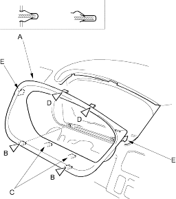
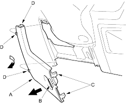

- When prying with a flat-tip screwdriver, wrap it with protective tape and apply protective tape around the related parts, to prevent damage.
- Take care not to scratch the dashboard and related parts.
- Tilt the steering column down.
- Remove the steering column upper cover (see page 17-9).
- Remove the instrument panel (A).
- Gently pull out along the bottom to release the clips (B) and hooks (C).
- Gently pull out the upper portion to release the clips (D) and hooks (E).
| Fastener Locations | |
B  : Clip, 2 : Clip, 2 |
D : Clip,2 |

- Install the panel in the reverse order of removal.
- Remove the driver's dashboard lower cover (A).
- Turn the lock knobs (B) 45° on each side.
- Gently pull out the right side to release the hooks (C).
- Pull out the panel to release the hooks (D).

- Install the cover in the reverse order of removal.